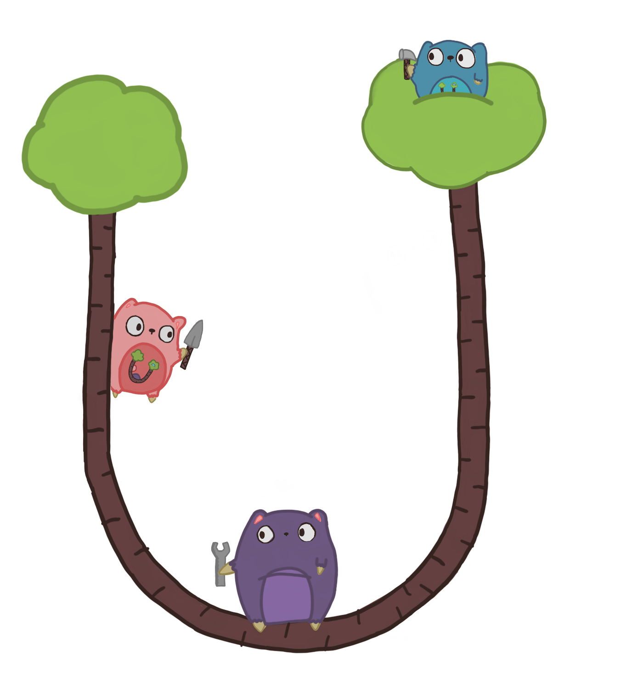

Behold the Gopher!
u-root
u-root is an embeddable root file system intended to be placed in a flash device as part of the firmware image, along with a Linux kernel. Unlike most embedded root file systems, which consist of large binaries, u-root only has five: an init program and four Go compiler binaries.
Setup
On an Ubuntu system, install prerequisites and ensure Go is at least version 1.7:
sudo apt-get install git golang build-essential
go version
Set your GOPATH:
export GOPATH="$HOME/go"
Clone u-root:
go get github.com/u-root/u-root
cd "$GOPATH/src/github.com/u-root/u-root"
Generate an initramfs of all u-root Go tools:
go run u-root.go -o initramfs.cpio
You can use this initramfs with your favorite Linux kernel in QEMU to try it out.
More instructions can be found in the repo's README.md.
Submitting Changes
We use GitHub Pull Requests for code review. Pull requests must receive one approval and pass CI before being merged.
For convenience, it is recommended to use this pre-commit hook:
ln -s -f ../../scripts/pre-commit .git/hooks/pre-commit
FAQs
So, why "u-root"?
It's to reflect a universal root, you can mount on every local and get a userland portable (it's a goal).
Any publications?
- USENIX 2015 ATC Paper
- USENIX 2015 ATC Talk
- Related: Embedded Linux Conference 2017 LinuxBoot Talk (YouTube video, slides)
Community
- Join the mailing list
- Join slack (Get an invite here.)
- Checkout the roadmap